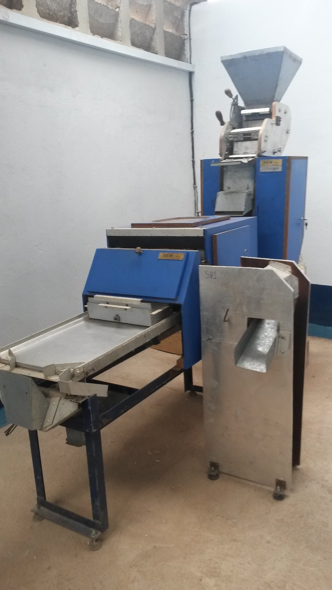
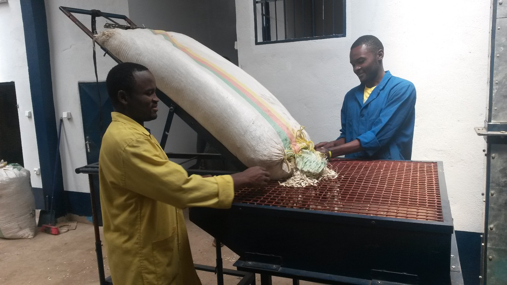
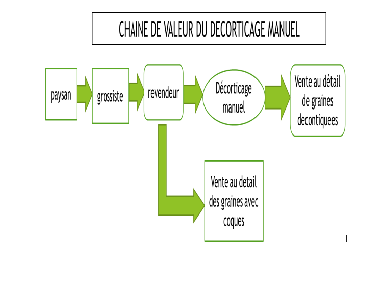
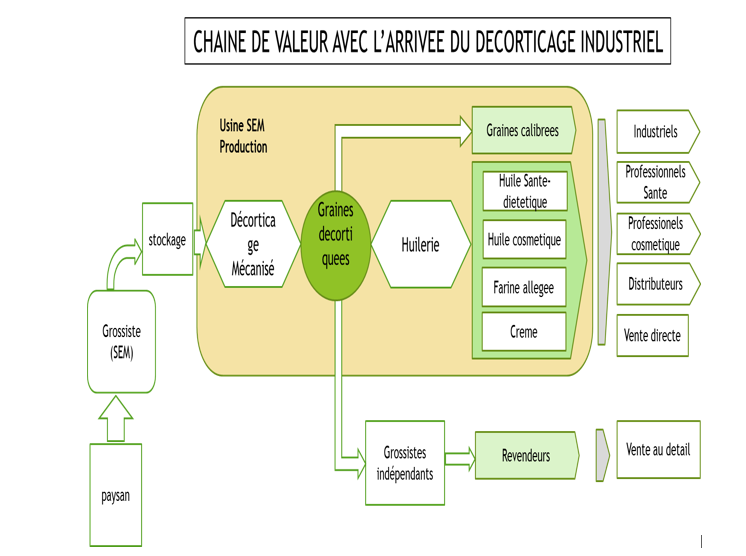
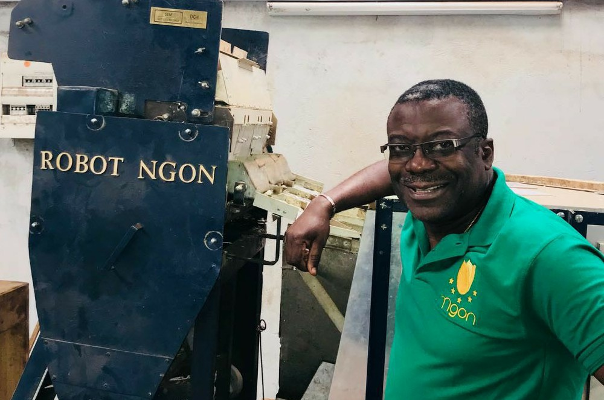

Bienvenue Chez SEM Production
Découvrez notre mission, notre vision et notre engagement pour la qualité

Notre Entreprise
SEM production, nous sommes la première industrie de décorticage de graines de courge à
coque dure.
Cette graine fait partie de la famille botanique des cucurbitacées (concombres, melon,
courge…).
Son nom scientifique est : cucumeropssis mannii, elle pousse en Afrique
sub tropicale et est connue sous les appellations de pistache africaine, graines de
courge tropicale, communément appelée pistache au Cameroun, egusi-itoo au Nigeria-Ghana,
Mbika au Congo.
Par ses nombreuses vertus c’est la Reine des graines de courge, qui
n’avait pu être mise en valeur par l’absence de technologie appropriée.
C’est maintenant chose faite par SEM production qui a développé sur trois décennies la
technologie appropriée.
Nous décortiquons et mettons en valeur cette graine dans une chaine industrielle ceci
via un procédé unique avec une précision supérieure à 97%.
Nous produisons les graines de courge décortiquées, sélectionnées et calibrées,
l’Huile Précieuse pour la diététique et santé,
l’Huile Précieuse pour la Cosmétique (peau et cheveux),
la farine allégée en huile, véritable super aliment.
SEM Production entend contribuer au développement d’une véritable filière agro-industrielle pour l’exploitation de cette graine aux immenses vertus localement et à l’export.
Notre siège social est basé à Douala, capitale économique du Cameroun
et notre usine est située dans la banlieue de Yaoundé capitale
politique du Cameroun.
L’exploitation a débuté en Juillet 2017.

Notre Histoire
Un parcours marqué par l'innovation et l'engagement
Tout est parti d’une idée, d’une passion, puis s’en est suivi dès 1988 un croquis de
conception, alors qu’à cette période l’auteur, Samuel Safo Tchofo, est un jeune
ingénieur d’opérations pétrolières affecté au Gabon.
L’idée ici était de réduire de manière significative la pénibilité liée au décorticage
des graines de courges appelées « pistache » ou « égusi ». À cette époque, il n’existait
pas de système fiable et d’efficacité reconnue pour accomplir cette tâche sur nos
produits locaux. De nombreux dispositifs artisanaux avaient été décrits sans apporter la
fiabilité et l’efficacité qui puisse mener à une solution industrielle.
Le tout premier prototype de notre projet a été fabriqué en juin 1988 à Lyon en France, durant ses vacances. Ce prototype était manuel et son rendement non prometteur était inférieur à 30%. Néanmoins, il a permis la même année par une modification de valider le concept de base et de porter autour de 50% l’efficacité. Toujours peu satisfaisant mais sur la bonne voie, c’est ainsi que le projet de brevet d’invention est approuvé et déposé en 1989 auprès du cabinet Maisonnier à Lyon. Par la suite, l’auteur est affecté en Algérie toujours comme ingénieur d’opérations travaillant en rotation 7 semaines sur 3 de repos en France.
Dès lors, il profitait de ses périodes fréquentes de repos en 1989 pour poursuivre ses travaux et ses efforts menèrent aux conclusions suivantes :
- Nécessité d’une étude préalable des propriétés physiques des graines ;
- Nécessité d’une étude statistique des populations de graine ;
Ces deux études s’avèrent être au cœur du projet qui devient ainsi non plus seulement un
projet d’invention technique mais un projet de recherche scientifique préalable.
Il a fallu attendre la fin de 1994 et début 1995 qui marque la période sabbatique de
l’auteur pour que le projet s’accélère et mène à un changement majeur notamment :
- La machine de décorticage devra être mécanisée et non manuelle.
- Il s’agira d’une chaîne de machines et non d’une seule, d’où l’approche industrielle.
De nombreux dispositifs techniques d’expérimentations, plus de 40, sont ainsi construits en marge du projet initial afin de valider les nouveaux concepts des différents modules du système. Désormais, l’efficacité du décorticage franchit la barre de 60% en 1995. Le premier prototype expérimental de la chaîne est en place. À ce moment, le prototype effectue le travail de 35 personnes et les concepts de base sont validés.
Il s’avère alors clair qu’un travail de recherche plus poussé est nécessaire afin d’optimiser et fiabiliser les solutions techniques. Fin 2012, Samuel Safo Tchofo anticipe et prend sa retraite ; il relance un an plus tard à plein temps la recherche qui aboutira à la formulation d’une série d’équations dont certaines sont présentes tant en statistiques, algèbre, équations différentielles…etc. Elles mèneront en 2015 à franchir les hautes barres symboliques de 90% d’efficacité au décorticage et la barre de 95% et au dépôt d’un brevet auprès de l’OAPI. Dans la même lancée, les prototypes industriels sont finalisés en trois unités : Prétraitement, Décorticage, Triage qui sont capables d’effectuer le travail de 80 personnes avec chacun une précision supérieure à 90%.
En d’autres termes, ce qu’un homme fait en 80 jours, ce prototype le fait en 1 jour. 28 années se sont écoulées entre le premier dessin et la solution actuelle. Le projet a été financé sur fonds propres, notamment la fabrication des pièces, l’achat de l’outillage et des équipements de mesures et la rémunération des assistants.
Les dates ci-dessous résument les périodes historiques partant du début du projet jusqu’à la création de SEM production :
- Janvier à Février 1988 : Cette période marque le début du projet, alors qu’il est ingénieur général des opérations pétrolières au Gabon, il consacre 40% de son temps au dessin de conception.
- Février à Mai 1988 : Toujours ingénieur basé au Gabon, il consacre 20% de son temps au suivi des dessinateurs.
- Mai à Septembre 1988 : Arrivé en France et officiant en tant qu’ingénieur, le concepteur consacre 75% de son temps à son projet. Cette période est caractérisée par la fabrication du tout premier prototype.
- Novembre 89 à Novembre 94 : C’est la période pendant laquelle il fait des études, des modifications et aussi le 1er essai qui donne déjà lieu à des résultats. Également, il est dans le management et des projets, ceci constitue son activité professionnelle, il consacre 20% de son temps à son projet personnel.
- Novembre 94 à Novembre 95 : Cette période se caractérise par un repos (année sabbatique) durant lequel il consacre 60% de son temps tant dans la recherche et aussi dans le développement ceci dans le but d’augmenter d’améliorer le rendement du prototype et obtenir de meilleurs résultats.
- Novembre 95 à Octobre 2012 : Durant toute cette longue période, son activité professionnelle prend le dessus alors qu’il est successivement dans le management et projets puis Directeur et enfin Directeur Général. Du fait de sa forte mobilité, il passe 15% de son temps à travailler sur ce propre projet qui donne uniquement lieu à des « essais ».
- Décembre 2012 à Novembre 2013 : Marquée par la délocalisation de la France pour le Cameroun avec toute la logistique, cette période est caractérisée par une accélération des travaux sur tous les aspects. Il est consultant et travaille sur SEM.
- Novembre 2013 à Décembre 2015 : La recherche, le développement sont intenses sur SEM. Ayant pour base de manière définitive le Cameroun, nous assistons dans un premier temps à l’installation de l’atelier ainsi que du laboratoire, ensuite à une recherche ultime plus poussée entre la France et le Cameroun pour se solder à la fin par la mise sur pieds du prototype final.
- 2017 : C’est la création de SEM production…

Notre Chaîne de Valeur
Découvrez notre processus de production rigoureux qui garantit l'excellence de nos produits
Notre chaîne de valeur est conçue pour garantir la qualité, la traçabilité et la durabilité de nos produits. Chaque étape est soigneusement contrôlée pour vous offrir le meilleur des produits naturels.



Le Promoteur
Samuel a 28 ans d'expérience dans les secteurs du Pétrole, Gaz et de l'Énergie, dont 15
ans en Afrique et 13 à l'étranger jusqu’en 2012.
Il prend sa retraite anticipée pour ensuite être consultant en énergie et surtout
finaliser un ancien projet qui lui tenait à cœur : celui de la recherche sur le
décorticage des graines de courges, tâche pénible et complexe jusqu’alors manuelle dans
son pays d’origine.
Ce projet aboutit en 2017 à la première usine de décorticage de graines de courge à
coque dure.
Il est diplômé de l'École Nationale Supérieure Polytechnique de Yaoundé en 1982 avec un
Master en Ingénierie Electromécanique.
Il détient divers diplômes et certificats en pétrole et gaz, en gestion d'entreprise, en
négociations de contrats pétroliers, en ingénierie pétrolière, en ressources humaines,
gestion des projets, etc.
Il est par ailleurs un orateur distingué dans diverses conférences sur l’Énergie et consultant en développement de contenu local dans le secteur du pétrole, gaz et mines notamment auprès des organismes des Nations Unies.
Samuel SAFO TCHOFO a commencé sa carrière internationale dans le secteur du pétrole, du gaz et de l'énergie en 1984 à Schlumberger, occupant les postes suivants du dernier au premier :
- • 3 ans en tant que Directeur Général du Cameroun et de la Guinée Équatoriale basé à Malabo
- • 3 ans en tant que Directeur RH du groupe informatique basé à Houston
- • 2 ans Consultant basé à Luanda
- • 5 ans en tant que Directeur du développement des affaires pour les compagnies pétrolières nationales africaines, et gestionnaire du contenu local basé à Luanda
- • 3 ans en tant que Directeur des ventes de produits de compteurs d'énergie - Afrique, basé à Paris
- • 3 ans en tant que chef de projet dans le centre de recherche et développement du groupe Schlumberger à Paris
- • 2 ans en tant que responsable du recrutement pour l'Afrique basé en France
- • 2 ans en tant qu'enseignant en technologie d'exploitation pétrolière, basé à Parme - Italie
- • 1 an en tant que chef de base, Tanzanie-Kenya basé à Mombasa - Kenya puis à Dar es Salaam - Tanzanie
- • 5 ans en tant qu'ingénieur des opérations pétrolières au Congo, au Gabon, en Angola, en Libye, en Algérie